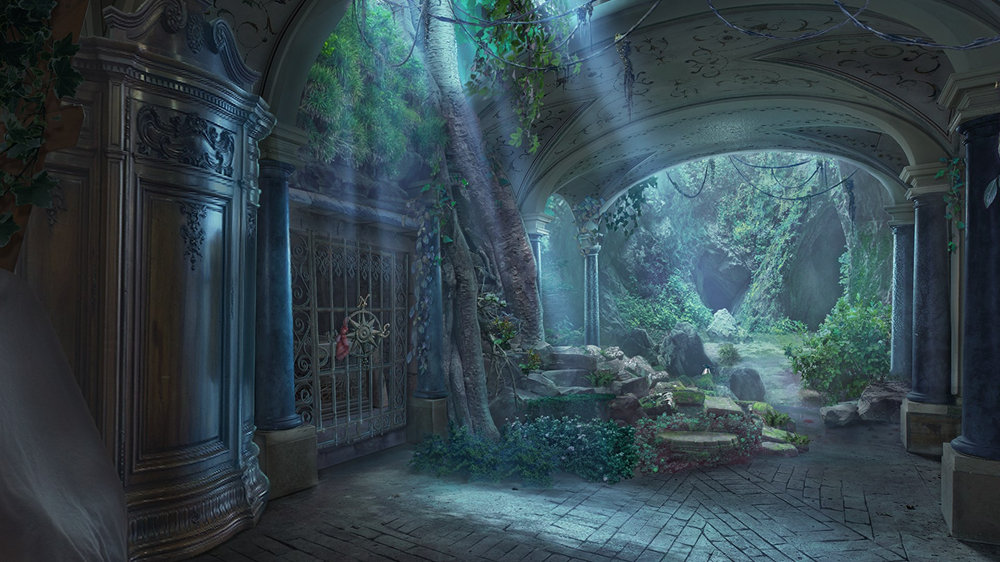
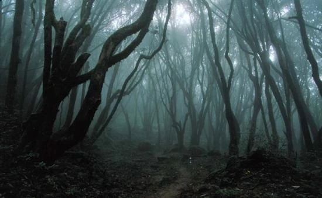
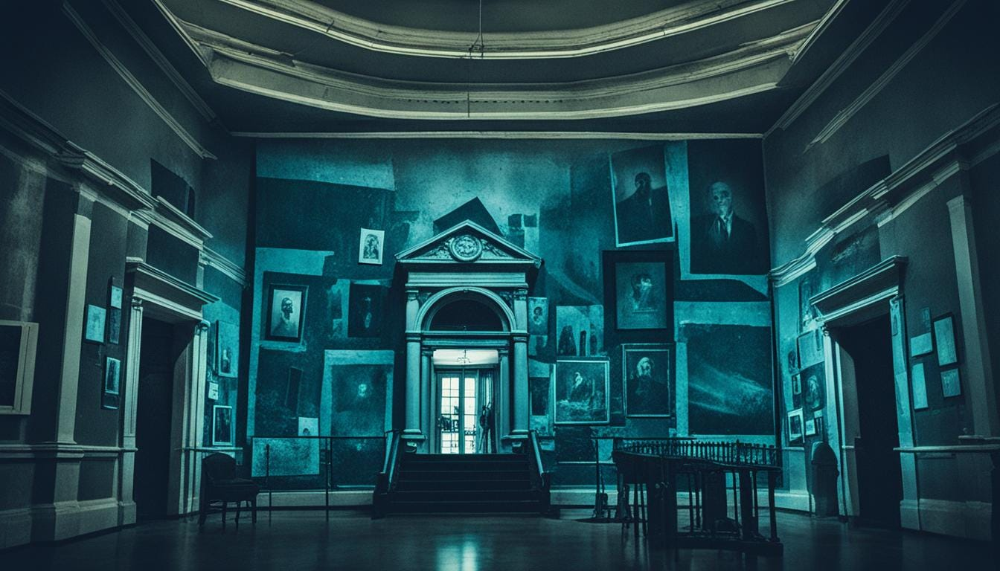

Você foi contratado como um investigador de mistérios, e agora você faz parte de um grupo de detetives chamada Verlust.
Se passou 3 dias, e então você foi chamado para investigar a primeira atividade paranormal. Mas vocẽ tem 3 opções de lugares para investigar.

Você chegou até o edifício, você sentia calafrios só de chegar perto. Você entrou no edíficio e fedia sangue misturado com mofo. Ao mesmo tempo que questionava, você finalmente entendeu o porquê do local ter sido abandonado, vários canos estourados, o lugar fedia muito por ser forrado por vários tapetes, além de proporcionar muito calor e poeira, o que podia irritar os moradores.

Você chegou lá. Desceu do carro, e logo sentiu uma sensação como se você estivesse sendo observado por mil olhos... Em meio desta floresta com várias árvores, nunca se sabe sobre a intuição humana. Você começou a entrar dentro da floresta. Você mal entrou na floresta e já viu vários rituais com escritas estranhas, desenhos bizarros. A única coisa em português escrita foi “O Deus da Floresta Negra está vindo.”.

Você chegou no museu. Tudo parecia normal até você abrir as portas emperradas do museu e se deparar com inúmeras marionetes olhando para a porta na qual você acabou de abrir, numa escuridão completa, você se sentiu obrigado a sacar a lanterna em sua mochila para iluminar o caminho. A única coisa que você conseguia pensar nesta situação é “Deus, me tire daqui.” enquanto entrava mais afundo no museu.